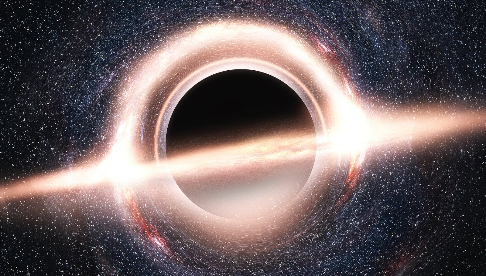

Types of Black Holes
Stellar-mass black holes are formed when a massive star collapses. They can be found scattered throughout the galaxy, in the same places where stars exist. Supermassive black holes are found at the center of nearly every large galaxy. The exact origin of supermassive black holes is still unknown. It is assumed that there must be a connection between the formation of the black hole and the galaxy, since there are correlated in the size of each other.
(Source: https://imagine.gsfc.nasa.gov/science/objects/black_holes1.html, https://www.nasa.gov/audience/forstudents/k-4/stories/nasa-knows/what-is-a-black-hole-k4.html)
